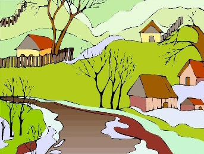

Fridas visor
av Birger Sjöberg
Inledning
Solen
sken på alla blanka gräs, när han för första gånger träffade Frida.
Bakom dem låg den lilla staden och myste och blundade i sin
söndagsdvala vid Kanalens plaskande böljor, på vilka snipor drevo ut i
sakta mak mot öppna vattnet.

Det tjänar föga till att mycket orda om de handslag, som sedan blevo växlade, de stunder av ömhet, som följde på detta stora ögonblick. Snart nog blev det klart för honom, att Frida var den vackraste, den ädlaste och värdefullaste i de myllrande skaror av kvinnor, som trängas på denna jordens gröna rund. När han stod i vardagens damm, flink och human, raskt avbitande snören, händigt och lätt slående in paket i skilda fantastiska former eller rundande strutar, liknande små ymnighetshorn, i vilka Njutningens gudinna skulle ösa sina röda och vita frestelser, vandrade hans tankar ofta bort över de vida torget. De gingo till den i lindars skugga liggande lilla tvärgata, där Frida, blond och rosig, än på sina små men fasta händer lyfte den jättestora kassaboken, än tankfullt lutade sitt burriga huvud över den svarta och iskalla kopiepressen. Både innehade de således enkla och underordnade, ehuru på sitt sätt betydelsefulla poster i den jordiska verkstaden. Men för honom hägrade städse hoppet att kunna göra ett sving uppåt, att en gång komma över en egen affär, ja, han såg ofta dess ljusblå skylt med gullbokstäver gunga fram och åter i vinden. Dock såg han endast detta i sina tankar, ty han ägde en viss förmåga att tydligt skåda sådana ting, på vilka icke med händer kan tagas; förvisso en styrka, när han inför Frida gjorde sina poetiska eller vetenskapliga betraktelser, likväl en svaghet i verklighetens värld, som är försedd med de hårdaste kanter. Fastän hans läggning sålunda var något inåtvänd, hände det dock sällan, att han gav fel tillbaka åt kunderna, och han var städse angelägen om att te sig fin och städad och ambitiös; egenskaper, vilka av chefen belönades högt, måhända mindre i form av kallt guld än med ett och annat gott löftets ord.